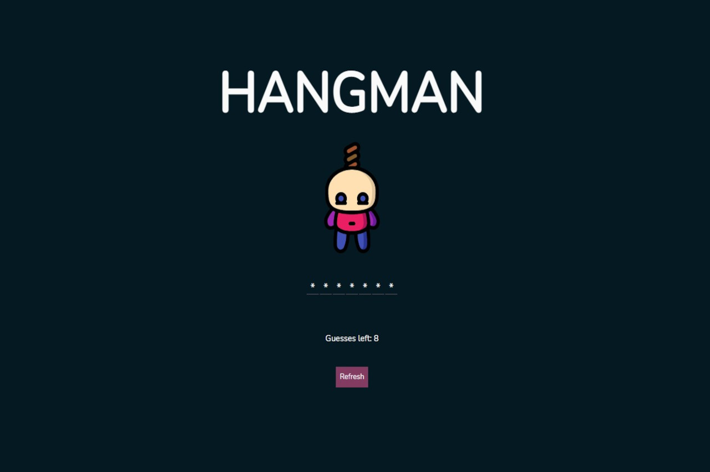

My Work
Websites & Web Apps

VR Quest
This is a fully mobile responsive webpage I have built using the Bootstrap framework. It features popular web components such as a carousel, parallax image, mobile navbar etc.
View Live View Code

Hangman (Desktop Only)
This project puts my Javascript skills to use with an Object Oriented approach. I've also used a third part API to randomly generate a new word every time you hit the 'Refresh' button.
View Live View Code